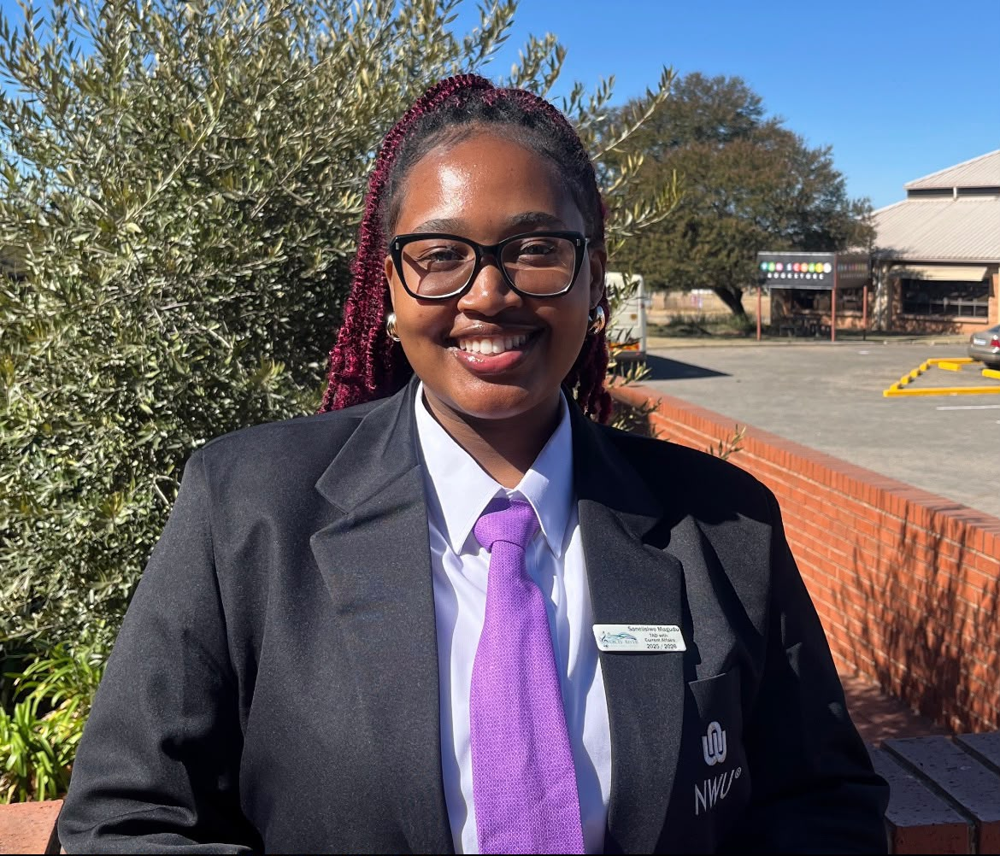

Final-year BSc Information Technology student at North-West University with an interest in Business Intelligence, Data Analytics, Artificial Intelligence and Decision Support Systems.

I am a final-year Information Technology student passionate about transforming data into meaningful insights that support business decisions. I enjoy solving real-world problems using technology and continuously expanding my knowledge in Business Intelligence, Data Analytics, Artificial Intelligence, and Decision Support Systems.I am continuously expanding my knowledge in databases, busineess intelligence, decisio support systems and emerging technologies while preparing for a career in analytics.
Java, Python, C++, JavaScript
HTML5, CSS3, Responsive Design
SQL Server, Oracle SQL, MongoDB
Data Analytics, Decision Support Systems, AI Fundamentals
Voices of the River Choir (2025–2026)
Promoted diversity and inclusion, organised awareness initiatives, and encouraged student engagement through meaningful activities.
Voices of the River Choir
Managed communication, coordinated announcements and assisted with planning choir activities and events.
Subcommittee (2023–2024)
Assisted committee leadership, organised meetings and supported successful student events.
Recognised by the Faculty for academic commitment, leadership, and active participation in student life.
Awarded First Runner-Up for an outstanding vocal performance, demonstrating confidence, stage presence and musical excellence.
Successfully served in student leadership while balancing academic responsibilities and extracurricular activities.
Bachelor of Science in Information Technology
Expected Graduation: 2027
Relevant Modules: Data Structures and Algorithms, Artificial Intelligence, Decision Support Systems, Databases, Computer Networks, Object-Oriented Programming, Operating Systems
A professional online portfolio showcasing my academic background, technical skills, leadership experience and career aspirations. Developed using HTML, CSS and JavaScript.
Email: magudusanelisiwe@gmail.com
Phone: 083 809 1269
LinkedIn: Connect with me
GitHub: View My GitHub
Portfolio: View My Portfolio